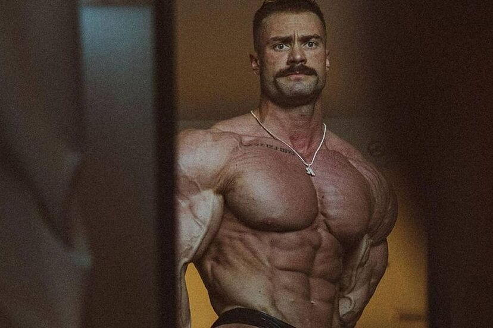

Modern dönemin en büyük Classic Physique efsanesi olan Chris Bumstead, altı kez Olympia şampiyonu olarak altın çağ estetiğini günümüze taşımıştır. Mükemmel vakum pozu, kusursuz hatları ve geniş sırtıyla milyonlarca gence ilham kaynağı olmaktadır.